Wakayama, Wakayama: things to do, food and stays
Wakayama · Wakayama
Wakayama
Highlighted on the Wakayama map.
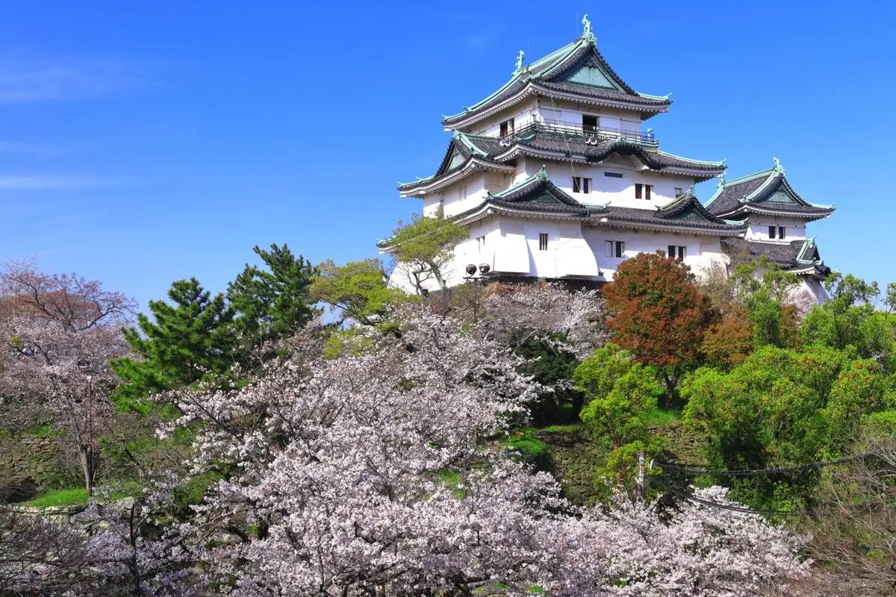
Stay
ホテルグランヴィア和歌山
Hotel Guranvia Wakayama
休暇村 紀州加太
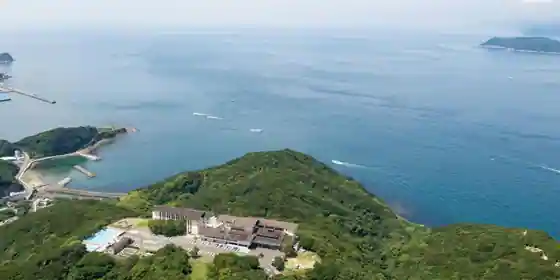
Kyukamura Kishu Kada
Inn in Miyama, Wakayama with scenic views.
ダイワロイネットホテル和歌山
Daiwaroinetto Hotel Wakayama
加太淡嶋温泉 大阪屋 ひいなの湯
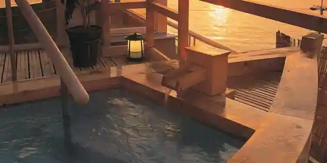
Kada Tan Shima Onsen Osaka Ya Hinano Yu
Inn at Kadatanshima Onsen in Kadakaigandori, Wakayama with open-air baths and local seafood dinners.
天然温泉 紀州の湯 ドーミーインPREMIUM和歌山
Tennen Onsen Kishu No Yu Dormy Inn PREMIUM Wakayama
コンフォートホテル和歌山
Comfort Hotel Wakayama
Hotel in Tomoda, Wakayama; 2-minute walk from Jrwakayama Station.
ホテルルートインGrand和歌山駅東口
Hotel Route Inn Grand Wakayama Eki Higashiguchi
Hotel in Kuroda, Wakayama with a large communal bath; 4-minute walk from Wakayama Station.
和歌山アーバンホテル
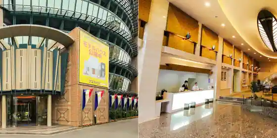
Wakayama Aban Hotel
Hotel in Kuroda, Wakayama with breakfast available.
和歌の浦温泉 萬波 MANPA RESORT
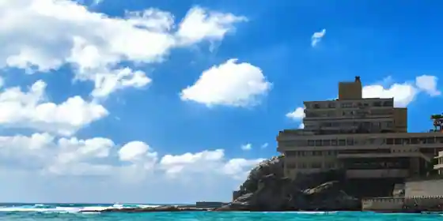
Waka No Ura Onsen Manpa MANPA RESORT
Inn at Wakanoura Onsen in Shinwautaura, Wakayama with open-air baths.
和歌山マリーナシティホテル
Wakayama Marina City Hotel
Hotel in Kemi, Wakayama with breakfast available and scenic views.
カンデオホテルズ南海和歌山
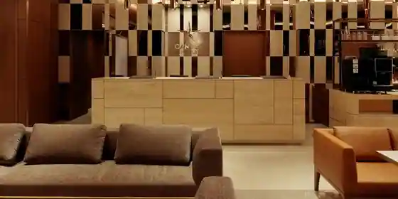
Kandeo Hotels Nankai Wakayama
Hotel in Wakayama with open-air baths and scenic views.
ホテルアバローム紀の国
Hotel Abaromu Ki No Kuni
Dining
オテル・ド・ヨシノ
Oteru Do Yoshino
鮨義心
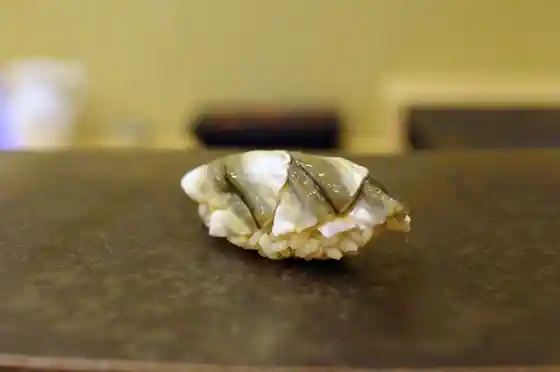
Sushi Gishin
炭割烹 新谷
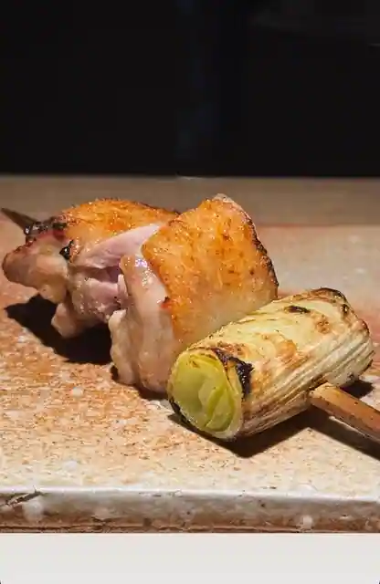
Sumi Kappo Shintani
中華そば専門店 井出商店
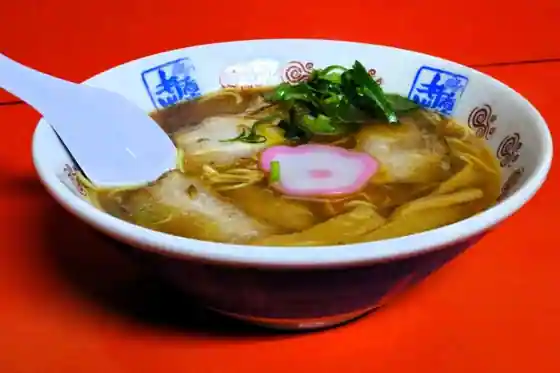
Chuka Soba Senmon Ide Sho
山為食堂
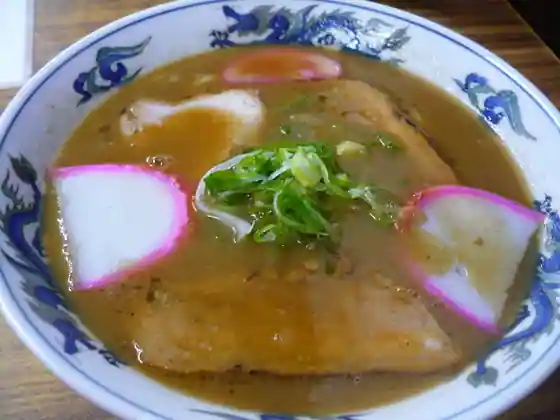
Yama Tame Shokudo
とんかつ荘 フジマル
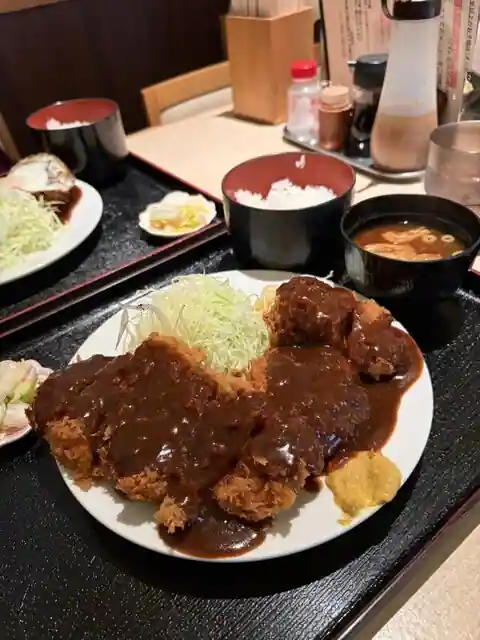
Tonkatsu So Fujimaru
丸三
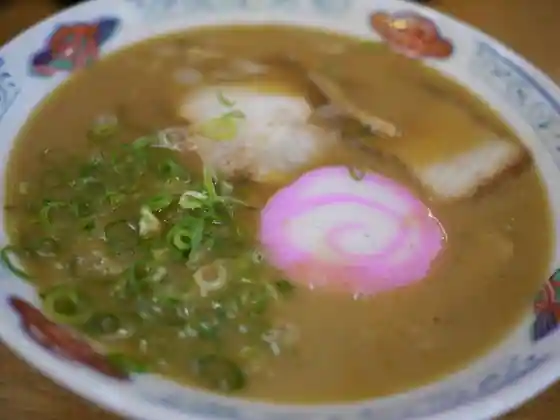
Marusan
ボナペティ
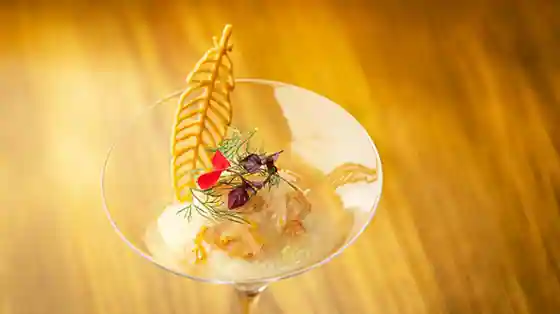
Bonapetei
鰻 心艶
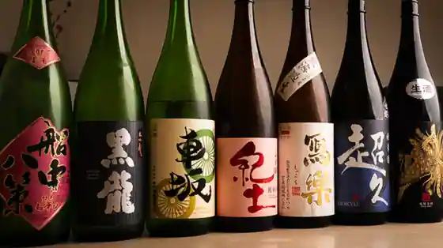
Unagi Kokoro Tsuya
まるおか
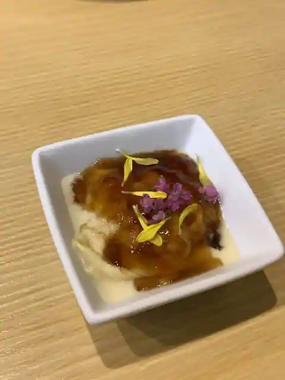
Maruoka
清乃 近鉄百貨店和歌山店
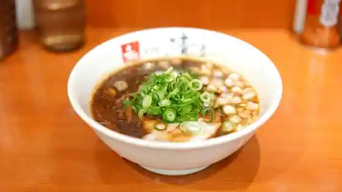
Kiyono Kintetsu Hyakkaten Wakayama
Adagio
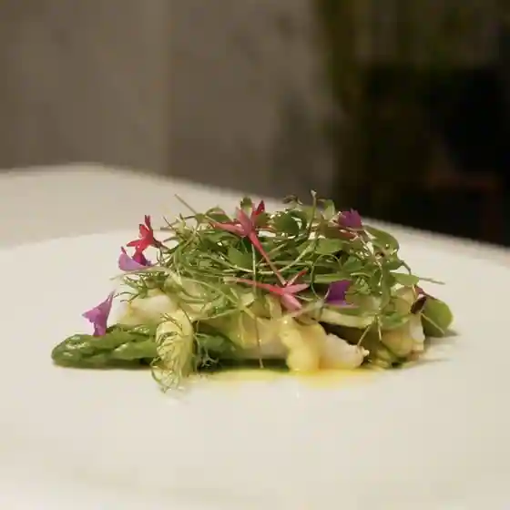
Adagio
八百亀
Happyaku Kame
魚料理 ぎん
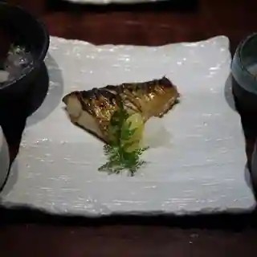
Sakanaryori Gin
くろしお
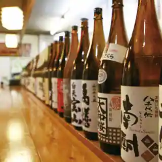
Kuroshio
すず音
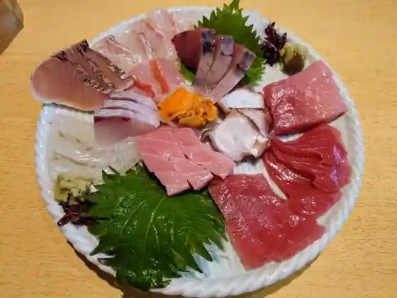
Suzu Oto
ラーメンまるイ 十二番丁店
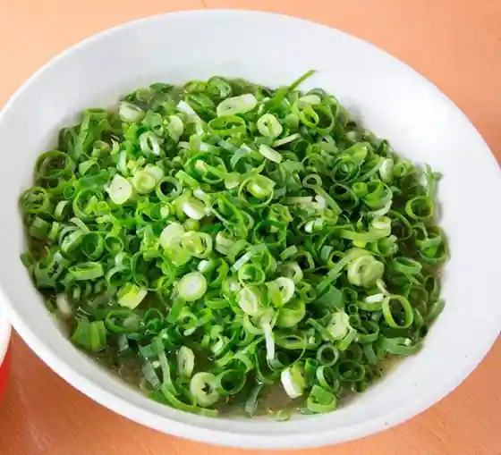
Ramen Maru I Juni Bancho
本家 アロチ 丸高
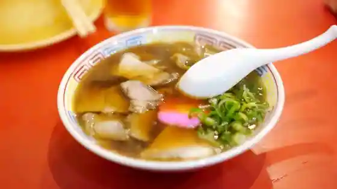
Honke Arochi Maru Taka
野田や
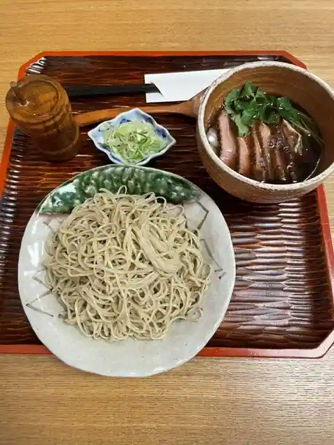
Noda Ya
輪一
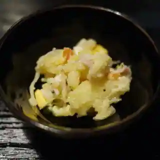
Wa Ichi
橋本
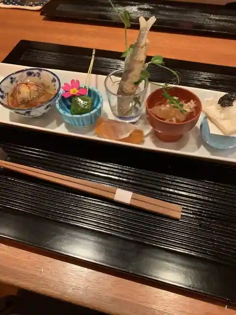
Hashimoto
丸美商店
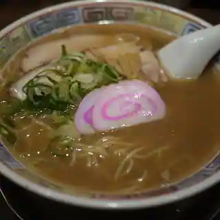
Marumi Sho
元車庫前丸宮中華そば 本店
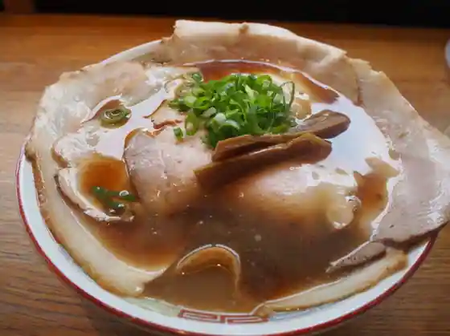
Moto Shako Mae Maru Kyuchu Hana Soba Hon
魚料理 ろっこん
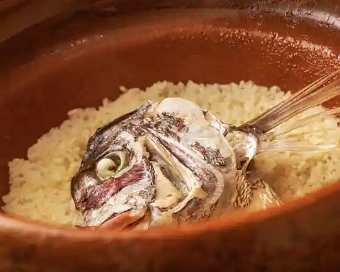
Sakanaryori Rokkon
Sights
Tomogashima
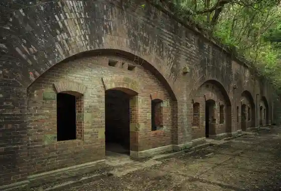
Wakayama Mariinashitei
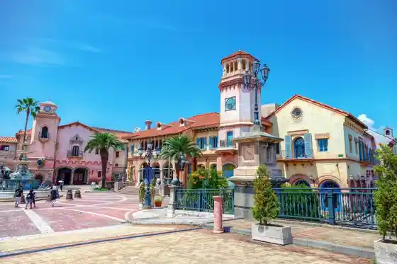
Wakayama Shiro
Kuroshio Market
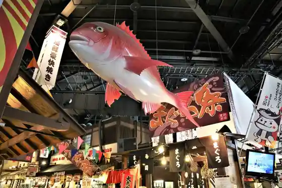
Kimiidera
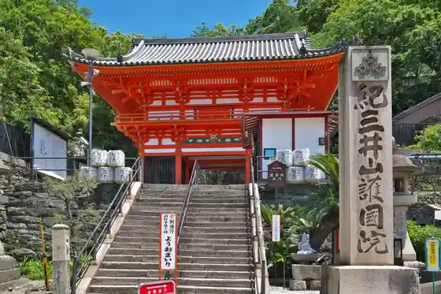
Saika Saki
Kishu Toshogu
Tan Shima Shrine
Kataonami Beach
Saika Saki Lighthouse
Bansho Garden
Iso no Ura Beach
Meisho Nishi Yuki Maru Garden (Autumn Leaves Kei Garden)
Wakaura Tenmangu Shrine
Hama no Miya Beach
Kada Beach
Yo Sui Sono
Wakayama Shiro Koen Zoo
I Ta Ke So Shrine
Forest Park
Kamado Yama Shrine
Furo Hashi
Wakayama Prefectural Museum
Tamatsu Shima Shrine
Kan Umi Kaku Imose Yama
Wakayama Rekishikan
Manyo Kan
Wakayama Prefectural Kii Fudoki no Oka
Nichimae Miya
Toge Ta Hiko Shrine
Nami So Beach
Wakayama Ritsu Kodomo Science Museum
Waka no Ura no Higata
the public
Wakayama Prefectural Kindai Art Museum
Wakayama Ritsu Museum
Taga Shrine
Ariyoshi Sawako Memorial Museum
Nishinosho Fureai no Sato
Kyu Nakasuji Ie House